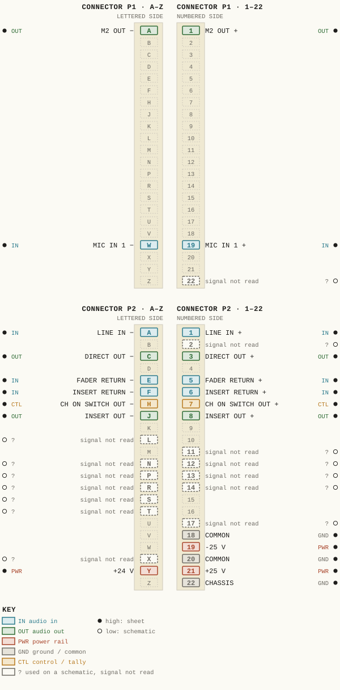
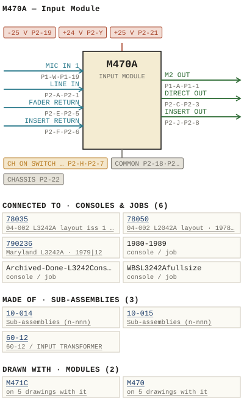

M470A — Input Module
| Type | module |
| Category | INPUT-PRE-AMPS |
| Try it | simulator & front panel · download package (zip) |
| Earliest dated evidence | 1977|10 — title-block date |
| Evidence | "DATE MAY 77" in PUBLIC/Manuals + tech DOCUMENTS/Modules/M470A Input Module.pdf |
| Confidence | high |
| All years found | 1977|10, 1979|12 |
| Used in jobs | 78050 (1978|11), 78035 (1978|11), 790236 (1979|12), 1980-1989, Archived-Done-L3242Console, WBSL3242Afullsize |
| Variants | M470, M470C, M470D, M470E |
| Folder | DOCUMENTS/APK/2006-01-03 - consol |
| Folder | DOCUMENTS/To Be edited/STEREO FOR THE L SERIES AUDIO CONSOLE |
| Folder | Modules/INPUT-PRE-AMPS/M470 |
Connections and circuit (ideal SPICE model)
Drawn live from its RTO-144 connections: run the generator, turn the gain, watch the VU. Open the netlist to see how the model is built.
Pictures


M470A.pinout.svg

M470A.connections.svg 1977 - M470A - 470-04-005 - FIMISH NPUT MODULE CONNECTOR REAR VIEW.jpg
1977 - M470A - 470-04-005 - FIMISH NPUT MODULE CONNECTOR REAR VIEW.jpg 1979 - M470A - P03 - TOC.jpg
1979 - M470A - P03 - TOC.jpg 1977 - M470A - 12.jpg
1977 - M470A - 12.jpg 1977 - M470A - 12_small.jpg
1977 - M470A - 12_small.jpg 1977 - M470A - 470-01-002 - OLO CONTROL EXTERNAL PEAK CALIBRATION PEAK INDICATOR.jpg
1977 - M470A - 470-01-002 - OLO CONTROL EXTERNAL PEAK CALIBRATION PEAK INDICATOR.jpg 1977 - M470A - 470-04-006 - IGNA FOL OWING CHE FADER AND CRA SWITCH.jpg
1977 - M470A - 470-04-006 - IGNA FOL OWING CHE FADER AND CRA SWITCH.jpg 1977 - M470A - Input Module Front.jpg
1977 - M470A - Input Module Front.jpg 1977 - M470A - Input Module Front_small.jpg
1977 - M470A - Input Module Front_small.jpg 1977 - M470A - Input Module Side 3.jpg
1977 - M470A - Input Module Side 3.jpg 1977 - M470A - Input Module Side 3_small.jpg
1977 - M470A - Input Module Side 3_small.jpg 1977 - M470A - P01 - Cover.jpg
1977 - M470A - P01 - Cover.jpg 1977 - M470A - P02.jpg
1977 - M470A - P02.jpg 1977 - M470A - P04.jpg
1977 - M470A - P04.jpg 1977 - M470A - P05 - 1-1.jpg
1977 - M470A - P05 - 1-1.jpg 1977 - M470A - P06 - 2-1.jpg
1977 - M470A - P06 - 2-1.jpg 1977 - M470A - P07 - 2-2.jpg
1977 - M470A - P07 - 2-2.jpg 1977 - M470A - P08 - 2-3.jpg
1977 - M470A - P08 - 2-3.jpg 1977 - M470A - P09 - 3-1.jpg
1977 - M470A - P09 - 3-1.jpg 1977 - M470A - P10 - 4-1.jpg
1977 - M470A - P10 - 4-1.jpg 1977 - M470A - P11 - 4-2.jpg
1977 - M470A - P11 - 4-2.jpg 1977 - M470A - P12 - 4-3.jpg
1977 - M470A - P12 - 4-3.jpg 1977 - M470A - P13 - 4-4.jpg
1977 - M470A - P13 - 4-4.jpg 1977 - M470A - P14 - 4-5.jpg
1977 - M470A - P14 - 4-5.jpg 1977 - M470A - P15 - 4-6.jpg
1977 - M470A - P15 - 4-6.jpg 1977 - M470A - P16 - 4-7.jpg
1977 - M470A - P16 - 4-7.jpg 1977 - M470A - P19 - Schematic.jpg
1977 - M470A - P19 - Schematic.jpg 1977 - M470A - P20 - Component Layout (2).jpg
1977 - M470A - P20 - Component Layout (2).jpg 1977 - M470A - P20 - Component Layout.jpg
1977 - M470A - P20 - Component Layout.jpg 1977 - M470A - Pres - Old Style.jpg
1977 - M470A - Pres - Old Style.jpg 1977 - M470A - Small (2).jpg
1977 - M470A - Small (2).jpg 1977 - M470A - Switch Mod 1.jpg
1977 - M470A - Switch Mod 1.jpg 1977 - M470A - Switch Mod 2.jpg
1977 - M470A - Switch Mod 2.jpg 1977 - M470A - file.jpg
1977 - M470A - file.jpg 1977 - M470A - small.jpg
1977 - M470A - small.jpg 1977 - M470A - wbsps - module - m470a input module 001_small.jpg
1977 - M470A - wbsps - module - m470a input module 001_small.jpg 1977 - M470A - wbsps - module - m470a input module 002_small.jpg
1977 - M470A - wbsps - module - m470a input module 002_small.jpg 1977 - M470A - wbsps - module - m470a input module 003.jpg
1977 - M470A - wbsps - module - m470a input module 003.jpg 1977 - M470A - wbsps - module - m470a input module 003_small.jpg
1977 - M470A - wbsps - module - m470a input module 003_small.jpg 1977 - M470A - wbsps - module - m470a input module 005_small.jpg
1977 - M470A - wbsps - module - m470a input module 005_small.jpg 1977 - M470A - wbsps - module - m470a input module 006_small.jpg
1977 - M470A - wbsps - module - m470a input module 006_small.jpg 1977 - M470A - wbsps - module - m470a input module 009.jpg
1977 - M470A - wbsps - module - m470a input module 009.jpg 1977 - M470A - wbsps - module - m470a input module 009_small.jpg
1977 - M470A - wbsps - module - m470a input module 009_small.jpg 1977 - M470A - wbsps - module - m470a input module 010.jpg
1977 - M470A - wbsps - module - m470a input module 010.jpg 1977 - M470A - wbsps - module - m470a input module 010_small.jpg
1977 - M470A - wbsps - module - m470a input module 010_small.jpg 1977 - M470A - wbsps - module - m470a input module 011.jpg
1977 - M470A - wbsps - module - m470a input module 011.jpg 1977 - M470A - wbsps - module - m470a input module 011_small.jpg
1977 - M470A - wbsps - module - m470a input module 011_small.jpg 1977 - M470A - wbsps - module - m470a input module 012.jpg
1977 - M470A - wbsps - module - m470a input module 012.jpg 1977 - M470A - wbsps - module - m470a input module 012_small.jpg
1977 - M470A - wbsps - module - m470a input module 012_small.jpg 1977 - M470A - wbsps - module - m470a input module 013.jpg
1977 - M470A - wbsps - module - m470a input module 013.jpg 1977 - M470A - wbsps - module - m470a input module 013_small.jpg
1977 - M470A - wbsps - module - m470a input module 013_small.jpg 1977 - M470A - wbsps - module - m470a input module 014.jpg
1977 - M470A - wbsps - module - m470a input module 014.jpg 1977 - M470A - wbsps - module - m470a input module 014_small.jpg
1977 - M470A - wbsps - module - m470a input module 014_small.jpg 1977 - M470A - wbsps - module - m470a input module 015.jpg
1977 - M470A - wbsps - module - m470a input module 015.jpg 1977 - M470A - wbsps - module - m470a input module 015_small.jpg
1977 - M470A - wbsps - module - m470a input module 015_small.jpg 1977 - M470A - wbsps - module - m470a input module 016.jpg
1977 - M470A - wbsps - module - m470a input module 016.jpg 1977 - M470A - wbsps - module - m470a input module 016_small.jpg
1977 - M470A - wbsps - module - m470a input module 016_small.jpg 1977 - M470A - wbsps - module - m470a input module 017.jpg
1977 - M470A - wbsps - module - m470a input module 017.jpg 1977 - M470A - wbsps - module - m470a input module 017_small.jpg
1977 - M470A - wbsps - module - m470a input module 017_small.jpg 1977 - M470A - wbsps - module - m470a input module 018.jpg
1977 - M470A - wbsps - module - m470a input module 018.jpg 1977 - M470A - wbsps - module - m470a input module 018_small.jpg
1977 - M470A - wbsps - module - m470a input module 018_small.jpg 1977 - M470A - wbsps - module - m470a input module 019.jpg
1977 - M470A - wbsps - module - m470a input module 019.jpg 1977 - M470A - wbsps - module - m470a input module 019_small.jpg
1977 - M470A - wbsps - module - m470a input module 019_small.jpg 19xx - DOC - _untitled_ 011.jpg
19xx - DOC - _untitled_ 011.jpg 19xx - DOC - STEREO L SERIES - P002.jpg
19xx - DOC - STEREO L SERIES - P002.jpg M470A - P18 - Functional Diagram.jpg
M470A - P18 - Functional Diagram.jpg 1978 - 78035 - c (3).jpg
1978 - 78035 - c (3).jpg 1978 - 78050 - b.jpg
1978 - 78050 - b.jpg 1979 - 790236 - 790236-01-001 - IDENTICAL CHAN CHAN INSERT FADER.jpg
1979 - 790236 - 790236-01-001 - IDENTICAL CHAN CHAN INSERT FADER.jpg 1980 - 1980-1989 - L3242 - P07.jpg
1980 - 1980-1989 - L3242 - P07.jpgPrice history
| Year | Kind | Price | Listed as | Effective | Source |
|---|---|---|---|---|---|
| 2005|38 | used market value | 250.00 | M470A New Switches and new pots | wbsps - website ARCHIVE/WBSPS 2008/ARCHIVE/old website/PriceGuide.htm | |
| 2005|38 | used market value | 200.00 | M470A Old Style Switches and Old Style Pots | wbsps - website ARCHIVE/WBSPS 2008/ARCHIVE/old website/PriceGuide.htm | |
| 2006|39 | used market value | 250.00 | M470A New Switches and new pots | wbsps - website ARCHIVE/WBSPS 2008/ARCHIVE/jan 2006 shell/priceguide.htm | |
| 2006|39 | used market value | 200.00 | M470A Old Style Switches and Old Style Pots | wbsps - website ARCHIVE/WBSPS 2008/ARCHIVE/jan 2006 shell/priceguide.htm |
Pinout & connections
Each contact as its own documents name it: 22 named (22 high confidence). An empty slot is a contact no page names. Hover a contact for its source; the table under the drawing lists them.
pinout (SVG) · connections (SVG) · pins (JSON)
Pin evidence — 36 contacts
| Pin | Signal | Kind | Confidence | Read from | Source |
|---|---|---|---|---|---|
| P1-A | M2 OUT | audio out | high | rto-144 | M470A.rto144.json, p. 1 |
| P1-1 | M2 OUT | audio out | high | rto-144 | M470A.rto144.json, p. 1 |
| P1-W | MIC IN 1 | audio in | high | rto-144 | M470A.rto144.json, p. 1 |
| P1-19 | MIC IN 1 | audio in | high | rto-144 | M470A.rto144.json, p. 1 |
| P1-22 | — | used on a schematic, signal not read | low | schematic | 1977 - M470A - Input Module (2).pdf, p. 19 “EQUALIZER INSERT P1-22” |
| P2-A | LINE IN | audio in | high | rto-144 | M470A.rto144.json, p. 1 |
| P2-1 | LINE IN | audio in | high | rto-144 | M470A.rto144.json, p. 1 |
| P2-2 | — | used on a schematic, signal not read | low | schematic | 1977 - M470A - Input Module (2).pdf, p. 19 “8yon 124v P2.Y A 223 220 Yaw 1+022 ChoN AMP P2-2 CRi 144002 P2-X R5S Zzok P?_ 24V” |
| P2-C | DIRECT OUT | audio out | high | rto-144 | M470A.rto144.json, p. 1 |
| P2-3 | DIRECT OUT | audio out | high | rto-144 | M470A.rto144.json, p. 1 |
| P2-E | FADER RETURN | audio in | high | rto-144 | M470A.rto144.json, p. 1 |
| P2-5 | FADER RETURN | audio in | high | rto-144 | M470A.rto144.json, p. 1 |
| P2-F | INSERT RETURN | audio in | high | rto-144 | M470A.rto144.json, p. 1 |
| P2-6 | INSERT RETURN | audio in | high | rto-144 | M470A.rto144.json, p. 1 |
| P2-H | CH ON SWITCH OUT | control / tally | high | rto-144 | M470A.rto144.json, p. 1 |
| P2-7 | CH ON SWITCH OUT | control / tally | high | rto-144 | M470A.rto144.json, p. 1 |
| P2-J | INSERT OUT | audio out | high | rto-144 | M470A.rto144.json, p. 1 |
| P2-8 | INSERT OUT | audio out | high | rto-144 | M470A.rto144.json, p. 1 |
| P2-L | — | used on a schematic, signal not read | low | schematic | 1979 - M470A - Input Module.pdf, p. 19 “2 N 40 3 7 …” |
| P2-11 | — | used on a schematic, signal not read | low | schematic | 1977 - M470A - P19 - Schematic.jpg, p. 1 “P2-11” |
| P2-N | — | used on a schematic, signal not read | low | schematic | 1977 - M470A - Input Module (2).pdf, p. 19 “CR9 P2-N N4oo?” |
| P2-12 | — | used on a schematic, signal not read | low | schematic | 1979 - M470A - Input Module.pdf, p. 19 “P2 - 12 } CONTROL” |
| P2-P | — | used on a schematic, signal not read | low | schematic | 1977 - M470A - Input Module (2).pdf, p. 19 “ACRBX Pz-P ivis RiC?,SK_IN4Qo3” |
| P2-13 | — | used on a schematic, signal not read | low | schematic | 1979 - M470A - Input Module.pdf, p. 19 “P2- 13 CONTROL” |
| P2-R | — | used on a schematic, signal not read | low | schematic | 1977 - M470A - Input Module (2).pdf, p. 19 “Ry CrI3 P2.i0 N4no3 P2-R” |
| P2-14 | — | used on a schematic, signal not read | low | schematic | 1977 - M470A - Input Module (2).pdf, p. 19 “P2-14+” |
| P2-S | — | used on a schematic, signal not read | low | schematic | 1979 - M470A - Input Module.pdf, p. 19 “e<c …” |
| P2-T | — | used on a schematic, signal not read | low | schematic | 1979 - M470A - Input Module.pdf, p. 19 “MU T E CON TRo L [ P2 - T ( o” |
| P2-17 | — | used on a schematic, signal not read | low | schematic | 1977 - M470A - Input Module (2).pdf, p. 19 “P2-17” |
| P2-18 | COMMON | ground / common | high | rto-144 | M470A.rto144.json, p. 1 |
| P2-19 | -25 V | power rail | high | rto-144 | M470A.rto144.json, p. 1 |
| P2-X | — | used on a schematic, signal not read | low | schematic | 1977 - M470A - Input Module (2).pdf, p. 19 “8yon 124v P2.Y A 223 220 Yaw 1+022 ChoN AMP P2-2 CRi 144002 P2-X R5S Zzok P?_ 24V” |
| P2-20 | COMMON also: COMMON (rto-144) | ground / common | high | rto-144 | M470A.rto144.json, p. 1 |
| P2-Y | +24 V | power rail | high | rto-144 | M470A.rto144.json, p. 1 |
| P2-21 | +25 V | power rail | high | rto-144 | M470A.rto144.json, p. 1 |
| P2-22 | CHASSIS | ground / common | high | rto-144 | M470A.rto144.json, p. 1 |
Dates found in the documents
| Year | Kind | Text | File |
|---|---|---|---|
| 1977|10 | title-block date | DATE MAY 77 |
1977 - M470A - 470-04-005 - FIMISH NPUT MODULE CONNECTOR REAR VIEW.jpg |
| 1977|10 | title-block date | DATE MAY 77 |
1977 - M470A - Input Module (2).pdf |
| 1979|12 | month & year | MARCH 1979 |
1977 - M470A - Input Module (2).pdf |
| 1977|10 | title-block date | DATE MAY 77 |
1977 - M470A - Input Module.pdf |
| 1979|12 | month & year | MARCH 1979 |
1977 - M470A - Input Module.pdf |
| 1979|12 | manual issue date | I SSUE ~5 W :// MARCH 1979 |
1979 - M470A - Input Module.pdf |
| 1979|12 | manual issue date | ISSUE #5 MARcH 1979 |
1979 - M470A - P03 - TOC.jpg |
Physical manual inventory
| Item | Location | Status | Scanned |
|---|---|---|---|
| M470A Input Module | PDF - Already scanned |
Documents (3)
| Year | File | |
|---|---|---|
| 1977|10 | 1977 - M470A - Input Module (2).pdf | note |
| 1977|10 | 1977 - M470A - Input Module.pdf | note |
| 1979|12 | 1979 - M470A - Input Module.pdf | note |
Photos & scans (69)


Sub-assemblies & parts used (3)
| Item | What | Family | Year | How we know |
|---|---|---|---|---|
| 10-014 | Sub-assemblies (n-nnn) | 1988|21 | named in its manual | |
| 10-015 | Sub-assemblies (n-nnn) | 1988|21 | named in its manual | |
| 60-12 | 60-12 / INPUT TRANSFORMER | Input transformers (60-n) | 1990|23 | named in its manual |
Parts list — board M470A (10 parts)
From 1977 - M470A - Input Module (2).pdf, page 13 (scanned); also in timelines/data/bom.csv.
| Ref | Part | Value | Manufacturer | Mfr part no. |
|---|---|---|---|---|
| M470A | InPuT MODULE | |||
| R46 | Resistor kW 620 Philips | 5% | ||
| R55 | delete | |||
| R56 | Resistor YW 10k | 5% | ||
| R58 | Resistor GW delete | 5% | ||
| R60 | Resistor %W 220 | 5% | ||
| R61 | Resistor kW 51 | 4k7 | ||
| R81 | Resistor sw 18k Philips | 53 | ||
| R85 | R86 Potentiometer Bourns WBS | 10-017 | ||
| R88 | Resistor 5 % k8 Philips | 4w |
Consoles & jobs it is connected to (6)
Their own drawings name this module.
| Job | Year | Drawing | Page |
|---|---|---|---|
| 78035 | 1978|11 | 1978 - 78035 - c (3).jpg | 1 |
| 78050 | 1978|11 | 1978 - 78050 - b.jpg | 1 |
| 790236 | 1979|12 | 1979 - 790236 - 790236-01-001 - IDENTICAL CHAN CHAN INSERT FADER.jpg | 1 |
| 1980-1989 | 1980 - 1980-1989 - L3242 - P07.jpg | 1 | |
| Archived-Done-L3242Console | 1977 - L3242 - P07.jpg | 1 | |
| WBSL3242Afullsize | 1977 - L3242A - WBS L3242P layout.pdf | 1 |

Named in other drawings & documents (4)
| File | Page |
|---|---|
| 19xx - DOC - L3242 - P07.jpg | 1 |
| 19xx - M472 - DOC - L3242 - P07.jpg | 1 |
| 19xx - M470 - DOC - L3242 - P07.jpg | 1 |
| 19xx - RTO-144 - Module RTO-144 Jumper calculator.xlsx | 1 |


From the manuals
Each manual split into its sections. Text that is the same in many Ward-Beck manuals (warranty, address, standard notes) is kept once on the Boilerplate page and linked.
General description (2)
Description — 2037 words · 1979 - M470A - Input Module.pdf, page 6
M4 70A INP UT MOD ULE
The M4 70A input modul e pro vide s the fa c iliti es of a c o ~p 1 et e inp ut .i ~i ng channel with the e~cepti on of t he attenuator and an option a l externa l equal i ze r. Input IN PUT Se l e ctor sw itc hes SW 1, SW2 and SW3 a l low a choice o f in put sel ect i on betw een one 11 ne a nd two . Ic rop hone i nput s . Addit ion - a l l y, SW4 prov ideS the i ns e r t io n of a 20 dB los s pad for th e mic ro phone sourc es . When oper ating f ro. a MI CROPHONE s ource, the i nput Illp ed ance of t he uni t i s s ubstant ia l ly hi gher th a n the s ource ill pe dance . In th e LIN E positi on. the ",. 70A presen t s i br i dging lmpedance of 30k 01'1. t o t he s ource. All i nput s t o th e lIlodu1e are tra nsfor.er coupl ed to t he prea lllp l 1f i er . Pr ealllplifl er The se condary s i de of th e input t r ans fo r.e r Tl conn ec ts t o t he pr e a.pl i fi e r i nput se c tio n , c o ~pr i sing Ql t hr ough 05 wit h t heir as soc iated co. ponent s . SENS ITIY I TY con t ro l R26 a l l ows contin uous l evel adjust llle nt of all in put s i gna ls over a rang e of 30 dB. The SE NSI TI VI TY co nt ro l th uS perllli ts ope r a tion wit h .ic ro phone inpu t l ev els f ro. - 60 to - 30 dB. i n the dir ect .od e , and with lev els fr o. - 40 t o -1 0 dBII wh en the PAD i s i nse r te d . Silllil a r ly . line l ev els froll - 10 dB. t o +20 dB. can be a c c o ~ m o d lt e d in t he LIN E .o de. [qu al l zer I ns ert Fo l low1ng Q4 li nd Q5 . th e s i gn. l is broug ht out to conn ec to r Pl. pi n 22 and ret urn ed t o the uni t vi. Pl, pin Z. This i nser t po i nt lI.y be us ed t o i ns e rt t he 1'14 72 equ a11 ze r into the sign al path . HI GH -P AS S Filt e r Fo l low i ng Pl , p i n Z, a 12 dB/ octa ve HI GH- PASS f ilt er is i nte . gr a te d f nto th e prea mp lifier . Three dis tin c t cu toff fr eque n- ca
ci e s can be sele cte d , By pr essin g SWS , SW6 or both s witc he s simu ltan eous ly, the - ] dB ro l l-of f poin t wi l l be loca te d a t p s.
70 Hz , 100 Hz or 150 Hz re spe ctively. BS
Pr e amplf f i er Ou t put and PHA SE Reversal W ://
Th e output of the filte r f eeds t he prea mplif ier ou tp ut s ta ge , tp ht
2- 1
WARD ~aECK S Y ST E M S LTD .
CI RCU ll DES CRIPT IO N M4 70A INP UT MODULE
cons ist i ng Df Zl , Q6 , Q7 , Z2 , Q8 and Q9 . The ac ti ve l y ba l an ce d ou t put is subs eq uen tl y r outed th r ough the PHASE re ve r sa l switch tD the i nse r t pDint. lNS ERT PD i nt A ba la nce d INSERT poi nt i s pro vi ded between P2 . pins 8/ J and P2 . pi ns 6/F t D al 1D w the us e of ins ert j ac ks, permittl ng t he 1n - sertion of an c l1 1ary equi pme nt l nto the signa l pa th . The I NSE RT pDi nt is f D11 0w ed by t h ~ CHANNEL ON swi tc h. CHANNEL ON Swi tc h The CHA NNEL ON swi tc h SW B cont ro ls a ll Dutpu tS of t he modu le with t he exc ep tio n of the PFL out put . PREF AO E- LI ST EN (PFL ) a nd PE AK Ov er l oa d In di cat or The br id gin g ta keo f f for the PF L outpu t and t he PE AK overl oa d ind ica to r is plc ked up betwee n th e INSERT poi nt a nd t he CH ANNEL ON swit ch. Z3 ope r a t e s as a vol tag e compa rat or . I t compa r es t he re ct if i ed a udio sig nal with an ex ter nally su ppl i e d referen ce vol tag e , a pplied t o con nector P2 , pin 16 . With th e r efe r en ce vol t age r anging fr om 0 t o appr oximate l y +10 volts , c a l ib r ation of th e ove r load poin t fr om - 6 dB m to +2 7 dBm i s pos si ble. PEA K ove rlo a d i s i ndic ated on OS2 . FAD ER Fol lowi ng SW 8, the s i gnal i s brought out of th e mod ul e via P2 , pins 7/ H f or ins e rt i on of a bal ance d f ade r . The out pu t of t he f a der i s retu rned t o the mo du l e on P2 , pi ns 5/£ . The i nput s i de of t he fa der a l s o sup pl ie s the fee d f or the f our PRE FACE AU Xl LIARV cha nne ls vi a switc hes SWg th r ough SW1 2 . Boos t e r Am plif i e r Z4 a nd Z5 co mp r is e the boost e r amp li f ier. ope r at i ng at a ga i n Df a
15 dB . Th e boos te r reco ve r s th e l oss i ncu r red with t he f a de r .c
plac e d in its nomin al 15 dB "i n-hand " pos it i on. ps BS
DIR EC T Out put W
Th e outpu t s ig nal o f the boos t e r ampli f ier fee ds the Dl REC T ou t - :// tp ht
1- 2
WA ~ D -eECI( SYS TE MS LTD .
CIRC UIT O( SC RI PT IO N H47 0A INP UT MODULE
put at con nec to r Pl , p\ns 3/C . This outp ut is designed to opera te i nto a br idging lo ad of 10k oh_ or hi ghe r. The no.ina l l e vel Of the DIRECT output i s 0 dB• . MA STER , SU BMASTE R and AUXIL IARY Out put s The boost er a.pl ifier a lso pr ovi des the feeds f or the left and right MASTER an d SUBMASTER out put s via PAN sw itch SW13 and PAN
- source: 1979 - M470A - Input Module.pdf, p. 6
Introduction — 267 words · 19xx - M470A - DOC - STEREO L SERIES - P002.jpg, page 1
The L2o42 and L3242 series WBS audio consoles including custom des igned series consoles may enhanced for stereo operation with series of retrofit kits These kits provide for the modifi cation series console add stereo input modules stereo equalizers and stereo monitor channels The modifications are des gned implemented on-site instal ation necessary wir ing harnesses by Ioca] stat personnel Opt ionally, installation assistance can provided WBS_ required t Tme travel and subs stance basis The input channel modification consists replacing number mono input channel modules (M470 , M470A , M47OB , M47oc) and the corres ponding mono fader units with stereo input channel modules (M471C) and stereo faders The kit available provides for this modification imp emented into group four input channe time Four eight twe channels could thus revised within sing] console using one two, three the kits second kit permits the replacement the mono channel equa] - izers with simi stereo units again implemented group four channels Multiple kits May also utilized similar manner the input channels Console monitoring covered third kit While it possible use two exsisting mono monitor channe)s tandem for stereo moni toring this pract ice may operat ionally awkward The monitor modif cation consists replacing the three (or four) consoie monitor modules with simi stereo units thus providing stereo ource selection switching and stereo Tevei control Mixing bus structure for the console remains unchanged However operat ionally for stereo console use the subma ter buses are used pairs (1.e.
for LEFT S2 for RIGHT) and similarly the master buses are a]so used in pairs imi for LEFT M2 for RIGHT)
- source: 19xx - M470A - DOC - STEREO L SERIES - P002.jpg, p. 1
Parts list (text) (3)
Parts List — 632 words · 1979 - M470A - Input Module.pdf, page 11
M470A INPUT MOOUL E
PART OESCRIPTIO N MFG Mf G PA RT NUM BER C36 C37 Capac ito r 22 lI f 12 5 0 0 , S i e _ e ns 0 B4 131 3·A5226- Z 0
C38 0 0 0 0
cas " " 0 0
C", Oiod e Mot o roh 1 1l~00 3 CO2 0 f af rc hlld 1N~148 0 0 CRl " CR4 " Motorola 1114 00 3 0 CR5 " " CR6 0 " 0
CR7 0 0 "
051 051 LEO. ,,' LEO , y e llo w Fai rc hil d " FLV1l 7 FL Va l 0 053 Li g ht bul b SChado w L22 , Z8 V Ql Transis tor Na t i on al 21'14 411 1 Q2 " 0 2N440 1 Q3 0
0 0 2N44 03 Q' 0 PII3 569 QS 0 " PN3645 0 Q' " 2112102 Q7 0 0 2114037 Q8 " 0 0 2112102 Q' " 211 40 37 QIO " 0 2112102 Qll • • 2114 037 Resis to r l:i:W 5S Philips "' R2 R3 0
0 15K 15K 47 " 0
R4 " 47 0 a
R5 0 l OOK " .c ps
R6 • l OOK " BS
R7 " 750 0
• • W
R8 750 ://
0 0
"'10 "" tp
.. , 0 " ht
WAAo·eeCK SY STeMS LT O.
PARTS LI ST
M47 0 A INP UT MODUL E
PAR T DESCRIP TIO N M" Mf G PAR T NUMBER
.11
'"". .13 Resistor 0
0 '" " 4 70 1( 4 70 11: Philip s • 0
0
0 '" 15K 0
'" 0 Rl5 .16 0 330 0
. 17 0 22 0
.18 "'" 0 0
R19 • 0
R2 0 • • .21 • '" 560 • R22 •. " 0 • . R23 . 100 . R2 . R25 . " 10K •
'26 Poten tio llle t e r Bourn s WB5 10-0 14 R27 .28 R29 Resis tor \;;11 5::: 0
0
• '" '" Ph il i ps
- source: 1979 - M470A - Input Module.pdf, p. 11
Parts List — 733 words · 1977 - M470A - Input Module.pdf, page 14
M4ZOA INPUT MQDULE PARI DESCRIPIION MFG MEG_PART_NUMBER R81 R82 R83 Resistor YW 53 18k 22k 22k Philips R84 R85 R86 R87 Potentiometer Bourns WBS 10-017 R88 R89 R90 R9 1 R92 Resistor aw 5 % 1k8 1k8 1kB 1k8 2k4 Philips R93 R94 R95 R96 R97 2k4 2k4 2k4 2k4 2k4 R98 R99 R]GO RIo1 R102 2k4 2k4 Potentiometer Bourns WBS 10-015 R103 RI04 R105 R106 R107 Resistor #w 5% 75 75 15k 15k Philips R1 08 R109 RI0 RIII RI12 15k 15k delete delete Resistor #W 5% T5k Philips R113 RII4 R115 I5k 15k 15k 4-5
WARD-BECK Systems LTD_ PARIS LIST M47OA InPuT MODULE PART DESCRIRIION MFG MEG_PARI_NUMBER R116 R117 RI18 RII9 R120 Resistor %W 5 % I5k 15k delete Philips Resistor &W 5% I5k Philips R121 R122 R123 R124 R125 15k 15k 15k 15k 15k R126 R127 R128 R129 RI30 15k 15k 15k 15k 15k R131 R132 R133 R134 R135 15k 15k 15k Resistor IzW 5 % 150 150 R136 R137 R138 R139 R140 RI41 SW1 SW2 Sw3 S4 150 150 Resistor &W 5% 10k 10k 91k 47 Switch Schadow WBS 11-031 SW5 Swg Sw7 Sw8 SW9 WBS 11-030 WBS 11-010 WBS 11-017 WBS 11-005 SW1o 4-6
WAAD-BeCK Systems LTD; PARIS LISI M4ZOA INPUI MODULE PARI DESCRIPIION MEG MEG_PARI NUMBER SwI] SW12 SW13 Switch Schadow WBS 11-005 WBS 11-002 SW14 SW15 Sw17) WBS 11-047 SW16 de Tete SW18 Sw19 SW21 Switch Schadow WBS 11-048 Sw2o delete Sn22 SWz3 SW24 SW25 Sw26 Switch Schadow WBS 11-002 WBS 11-005 SW27 WBS 11-005 TI Trans former WBS 60-12 21 22 23 24 25 Integrated Circuit Nationa 1 L356 LM2O1 CR? to CRI 3 Diode Motoro]a 1n4003 WB S recommends the use 0 [ replacement parts ma de by che specified manufacturers for continued optimum equipment performance .
WBS M47oa HASTER 455 /GNMENT s4iEch SW2/ : When depressed RiGHT eutput fed SunMing resistors '9RSTER externa 5 UII i 419 bus MASTER ASsiGNHE"T switct Sw/7 When depressed, LEFT bulpuI Fed VmM res stors 0 , [BFnE NASTER S1mIIT #us MI SUBMA STER 452 IGMMENT switches ShIB and 5w19: Khen depe ressed iGhT output Fed via 'SUBMAS#ER summi 52 fesstor externd SUrrming buscs andrr respect vely. SUBMGSTEF ASSIG HENT switches 54iL and S41S: Khen depressed LEF output fed Su SUD 45?ER 58 res istors erternj SuMT ing buses end;Or spec ive |Y. "pUT SLecTuk Ech Sh? When depressed, connects LINE source input of unlt. HiGH-Pass filler switch 5w6 When depressed inserts I0O dBfoctave HGH-PASS Iter inco che igna peth iNPuT SELECTOR Swiict 5w2 : Yhen depressed, connect 5 MICROPHO E npu [ Lni HiGH-PASS Filter switch ShS: When Inserts derfessed; HI, dB/oclave HIGA- PA 5S Iter Into the signa path When SWS and 5w6 Jre depressed, E- obothreque che resulting nc y 150 HncropSonectoR Lostnpch Sl uni Uhen depressed; connects 8d PHA5E swi tch Sw7 ; When depressed; thi 5 switch Wi rever the polarity Lhe output Tgna re lative tne rput gna and operate che asso2 ated LED. PLD insertion switch SwL When dep essed, inserts PA 0 Jinto hoth ICROPHDNE inputs 6 SENS |Tivity control R26 Provides edjustab le leve controi range snurces cont nuous for nput PEAK OVERLOAD indicator 052: Wi Flash Overloa cond 4on irdicatc SENS PRE PST PRE'Post AUXTLIARY switches Sw9 Shio, Sw1 Swi2: Tox choosc Tck-UP Points For Jix !LiaRy thf outputs and ther prit (PRE) 8 fter Posti Ene channe fader AuxILIARY LEVEL controls I0D: RIdi= Ri0z, Rio; Control Tcvet$ AUXILIARY outputs and respeclively. AUX Pae Os _ AUX ILIART AssigmEnT switches SN73 _ Sh24 Sh25, Sw26 Whcn dercssed che appropriate AUX iiAry output gna Fed assoc iated outpul_ AUX PRE PST PAN swi Ech SWI3: When depressed, enables PAR control AUX PAN control RBL RRste? Positlons channe gna be Iween 853 and SUBMA STER mlxlng buses Teft Figha; and PRE PST PRE-FADE-LISTEN swltch 5w27 When depressed che gna ahead of the fader and CHA NNEL switch |5 "Fedato the PFL ouepul; CAA NNEL switcn SHB ; When depressed feeds signa| DRECT outPut left and right SUBMASTER and MASTER outputs che SOLO ouEpUT the post- fade 'AuxiLiAry ouEPuese ddl Tona sw8 externa sontroi equipped with contact s provide Fune ons AUX SOLO switch 5422: wnen depressed the Signa folloxing the fader and CHA NNEL swltch is fed the SOLO oulpul PAN ISSUL DATE REvISION WBS DRN G ENG; CKD RlL APP SCALE WAAD-BECK SYSTEMI CH ON M470 ^ INPUT MODULE
- source: 1977 - M470A - Input Module.pdf, p. 14
- also in: 1977 - M470A - Input Module (2).pdf, p. 14
Drawings (10)
Each scan with its trace laid over it: the slider runs from the scan to the vector drawing. Click one to see it large and save it as SVG, DXF, KiCad, PDF or PowerPoint.
Olo Control External Peak Calibration Peak Indicatorviewer
Fimish Nput Module Connector Rear Viewviewer
Igna Fol Owing Che Fader And Cra Switchviewer
M470A - P18 - Functional Diagramviewer
Read from the drawing title blocks.
| Drawing | Title | Date | Drawn by | Checked by | Iss. | Source |
|---|---|---|---|---|---|---|
| 470-04-005 | Fimisha Input Module Connector Rear View | 1977|10 | RIA | file p.21 | ||
| 470-04-005 | Fimisha Input Module Connector Rear View | 1977|10 | RIA | file p.21 | ||
| 470-04-005 | Fimish Nput Module Connector Rear View | 1977|10 | file | |||
| — | file | |||||
| 470-01-002 | Solo Control External Peak Calibration Peak Indicator | GEB (Gerry E. Bell) | file p.18 | |||
| 470-01-002 | Solo Control External Peak Calibration Peak Indicator | GEB (Gerry E. Bell) | file p.18 | |||
| 470-01-002 | Olo Control External Peak Calibration Peak Indicator | GEB (Gerry E. Bell) | 3 | file | ||
| 470-04-006 | Wnen Depressed The Signa Folloxing The Fader And | RLL | file p.17 | |||
| 470-04-006 | Wnen Depressed The Signa Folloxing The Fader And | RLL | file p.17 | |||
| 470-04-006 | Igna Fol Owing Che Fader And Cra Switch | DB | RLL | file |